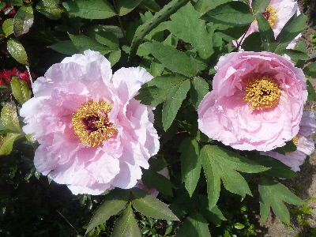
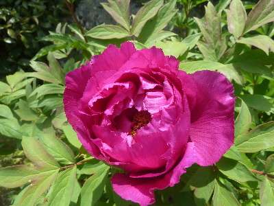
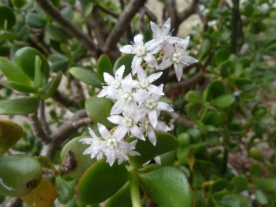
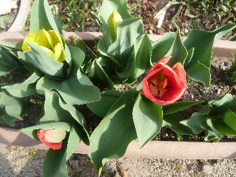
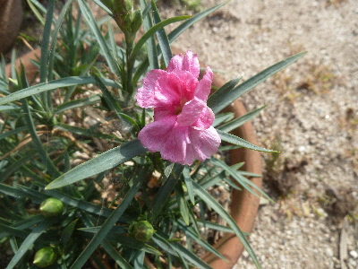

遊びで植物を育てよう
2018/04/14
ボタンもシャクヤクの咲きました。
綺麗に咲いていますが、なかなか見れないです。

お客さんに見てもらえるといいんですが、そう都合よく見てもらえないですよね。

花の時期は今だけです。
せっかく咲いているので、ちゃんと鑑賞しようと思いました。
【4月TOP】
【日記TOP】
【園芸TOP】
2018/04/07
金のなる木の花です。
毎年花が咲いているんですが、今頃が開花時期だったかな？
小さいのであんまり印象に残らないみたい。

ネットで検索したら、花の時季は11月から2月とありました。
そういえばお正月くらいに咲いてる気がする。
今年は花の時期が長かったのかな。
【4月TOP】
【日記TOP】
【園芸TOP】
2018/04/01
チューリップが咲きました。
チューリップって目立たない花な気がする。

今の時期だと桜や桃とかの木の花のほうが派手で目立ってる。
大量に植えるといいんでしょうね。
【4月TOP】
【日記TOP】
【園芸TOP】
2018/04/01
カーネーションが咲きました。
やっと咲きました。

ちょっと形が悪いですね。
つぼみもいっぱいあるので、これからしばらく花がたのしめそうです。
【4月TOP】
【日記TOP】
【園芸TOP】
過去の日記
【2024年4月の日記】
【2023年4月の日記】
【2022年4月の日記】
【2021年4月の日記】
【2020年4月の日記】
【2019年4月の日記】
【2018年4月の日記】
【2017年4月の日記】
【2016年4月の日記】
【2015年4月の日記】
【2014年4月の日記】
【2013年4月の日記】
【4月TOP】
【日記TOP】
【園芸TOP】
畑仕事じゃないよ。
【おいしいものを食べよう。】【たくさん寝よう。】
【ソロ活をしよう!】【季節感のあることをしよう。】【動画視聴はほどほどに。】【当サイトの全てのコンテンツは無断転載禁止です。】